この動画で伝える一文
「技術的には可能です」「お金がかかります」と言えば、やめた方がいいことが伝わると思っている人に、その言葉は相手に選ぶ権利を渡し、見せたものは欲しいものに変わり、お金では時間を買えず、断るなら引き受けられるカードだけを並べると伝え、できると言ってできなかった方がよほど多くの人に迷惑がかかるので、できないことはできないと納得してもらい、本当に伝えたいのはたぶん別の言葉だ、という本人の結論を残す。
01の「その一言で、カードを渡す。」と、08の「できないことは、できないと、納得してもらう。」で、同じ主張の背骨が通るようにします。02が見せたものは欲しいものに変わることとおとり効果を、03が「やる前提」に載ることを、04が婉曲は選ぶ権利を渡すことを、05が費用の話も選択肢になることを、06がお金で時間は買えないことを、07が引き受けられるカードだけを並べることを足します。
留保は02の「ある程度」「だまそう、ではない。」「かなり減る。」、03の「相手は、そう受け取らない。」、04の法外な金額は出せないこと、05の個人の嫌いは載せないこと、06の「一つの手。」と経験則、07の出した札は選ばれうること、08の「たぶん、別の言葉。」に置きます。最後は本人の結論で閉じ、視聴者への問いかけや、両論を同じ比重にしたまとめにはしません。
視聴者
見積もりや要件の場で、「技術的には可能です」「お金がかかります」と答えてしまう人。見終わったあと、やるべきではないことは引き受けられる条件だけを並べ、できないと納得してもらえるようにします。
構成と尺
声は理由・留保・本人の結論の範囲を、文字は主張と決め語を、札と棚と矢印は選択の移動を受け持ちます。全文字幕は足しません。写真も動画も使いません。図形と文字です。
本編139.4秒、全体144.9秒です。声は662字。5.5字/秒を仮の読み速度とすると120.4秒です。残りは8カット×約2秒（声の前0.5秒、後ろ約1.5秒）と、08で結びを受け取る約3秒です。5.5字/秒は過去の日本語ナレーションの実測（約5.5〜5.7字/秒）に合わせた目安で、語の読みと間で実測は変わります。制作側が声と画を合わせて調整します。読む速さを上げて詰めません。表の秒は0.1秒単位で、合計が139.4秒になるように置いています。車の銘柄、購読プランの金額、引き受けカードの個別の条件はこの尺では入れていません。入れなかった論点は references.md にあります。
| カット | 区間 | この区間で分かってほしいこと | 声／画面 |
|---|---|---|---|
| 01 その一言で、カードを渡す。 | 0:00.0–0:12.2（12.2秒） | 「技術的には可能です」は、やめた方がいい、という意味であることが多い。その一言で札を渡している | 56字／31字 |
| 02 見せたものは、欲しくなる。 | 0:12.2–0:32.4（20.2秒） | 並べたものは欲しいものに変わる。選ばれない札でも判断は動き、実現できないものは出さない | 100字／64字 |
| 03 やる前提に、載る。 | 0:32.4–0:40.8（8.4秒） | お金と時間を出すからやって、と返った瞬間、その案はやる前提に載る | 35字／26字 |
| 04 選ぶ権利を、渡す。 | 0:40.8–0:58.8（18.0秒） | 法外な金額では隠れない。数百万円ならその金額で引き受ける。婉曲が選ぶ権利を渡す | 88字／60字 |
| 05 費用がかかると、決まる。 | 0:58.8–1:15.7（16.9秒） | 費用がかかります、も選択肢になる。理由を先に出し、個人の嫌いは載せない | 82字／62字 |
| 06 お金で、時間は買えない。 | 1:15.7–1:43.0（27.3秒） | 品質も納期も動きにくいとお金に寄る。1か月後は3倍でも間に合わないことがある。解決できる段階なら一つの手 | 139字／68字 |
| 07 引き受けられるカードだけ。 | 1:43.0–1:58.4（15.4秒） | 無理です、だけでは交渉が止まる。出すのは引き受けられる札だけ。出した札は選ばれうる | 74字／48字 |
| 08 できないと、納得してもらう。 | 1:58.4–2:19.4（21.0秒） | できると言ってできなかった方が迷惑がかかる。できないと納得してもらう。本当に伝えたいのはたぶん別の言葉 | 88字／53字 |
| 09 エンドロゴ | 2:19.4–2:24.9（5.5秒） | 制作表示 | 0字／0字 |
字数は空白・改行を除き、句読点を含みます。画面は各カットの「画面の文字」に掲げた文言の合計です。同じカットの中で、札の面と大書きが同じ語のときは一度だけ数えます。別のカットに同じ語が出るときは、カットごとに数えます。08の21.0秒には結びを受け取る約3秒を含みます。声の合計662字、画面の合計412字です。
カット表・絵コンテ
各カットの開始と終了を画像で示します。コマ画は構図の設計資料です。番号、はじめ、おわりは画像の外だけに書きます。章表示、テロップ帯、エンドクレジットは入れません。03のドリーイン2秒と、その直後のホイップパン0.4秒は、札が裏返る見せ場の時間として守ります。ほかの秒数・位置・角度は参考値です。制作側は動きの狙いと可読性を満たす方法を選べます。大きな画面運動を入口と出口だけに限定しません。カメラの名前はカメラワークと切り替えの名前に合わせ、図の層だけに掛けます。
その一言で、カードを渡す。
0:00.0–0:12.2 / 12.2秒 ・ 主張 ・ 声56字／画面31字

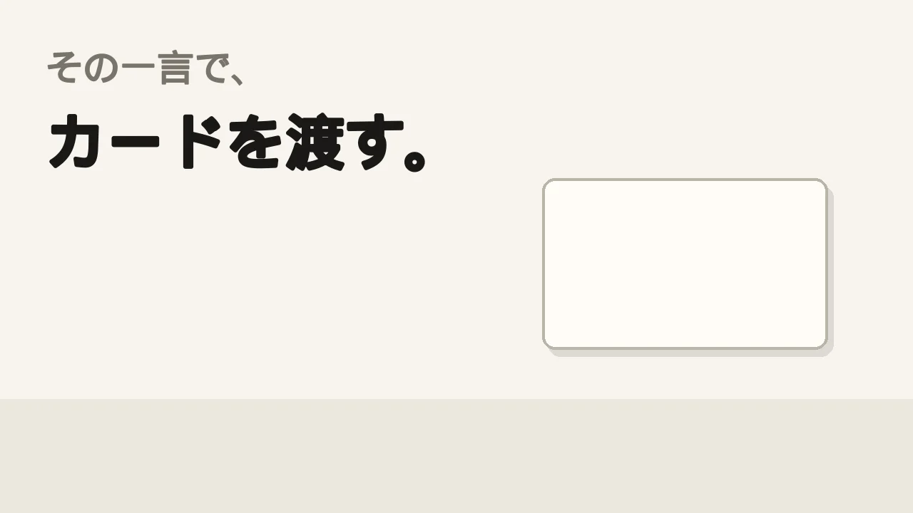

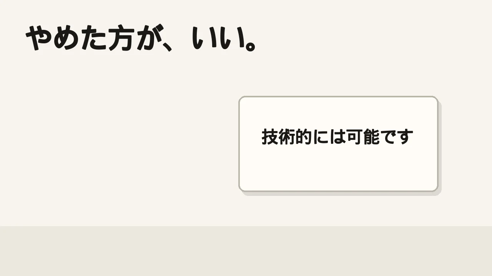
その一言で、カードを渡す。
やめた方が、いい。
技術的には可能です
「技術的には可能です」と言った瞬間、交渉は負けています。たいていの場合、本当の意味は、やめた方がいいです、です。
はじめは左の大きな二段と、右の空の札です。おわりは左に「やめた方が、いい。」、右の札の面に「技術的には可能です」。札は語に触れません。01は横の二段、08の結びは縦に積みます。
- 声は約0.5秒置いて入る。「カードを渡す。」は行のマスクから左へ入り、声の「交渉は負けています」に着地する。
- 声の「やめた方がいいです」で、「やめた方が、いい。」が大きく着地する。このとき空の札が言葉を受けて、面に「技術的には可能です」が載る。
- 読むあいだ、テーブルの層は右へゆっくり流し、札は流れより少し速い。字形は崩さない。
- 札の流れを、02の棚の横移動へ渡す。ここで止めない。
テーブルの層を札の進行に合わせて少し右へ振る（パン）。文字は正面のまま読む。
図形と文字。札は選択を運ぶ面です。車も、人物も描きません。
見せたものは、欲しくなる。
0:12.2–0:32.4 / 20.2秒 ・ 根拠と留保 ・ 声100字／画面64字

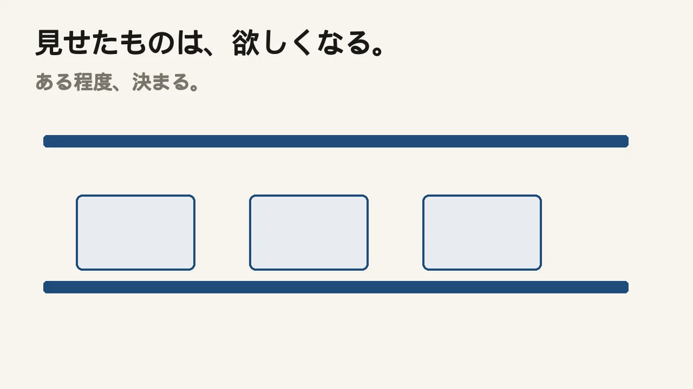

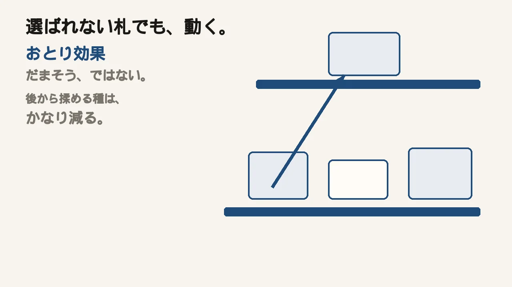
見せたものは、欲しくなる。
ある程度、決まる。
選ばれない札でも、動く。
おとり効果
だまそう、ではない。
後から揉める種は、かなり減る。
手が届かないものを並べると、欲しいものに変わります。選ばれない選択肢でさえ、判断を動かします。おとり効果と呼ばれる現象です。選ばれうるなら、なおさらです。今の予算と期間で実現できないものは出しません。
はじめは上の二行と、画面の下半分を占める棚です。箱は棚の上に乗り、文字には触れません。おわりは左に四段の文字、右に上下の棚です。矢印は左の文字の手前で止まります。上の箱は、手が届かない側に置いたものです。銘柄も値段も書きません。
- 棚が奥と手前の二段で入る。手前の棚ほど速い。「見せたものは、欲しくなる。」は声の「欲しいものに変わります」に着地する。
- 声の「判断を動かします」で、選ばれない札が棚に残ったまま、矢印が隣の箱から上の箱へ曲がる。「おとり効果」が青で着地する。
- 「ある程度、決まる。」は灰のまま残す。範囲が全部決まる、とは見せません。
- 声の「実現できないものは出しません」で、上の箱が棚から退く。「だまそう、ではない。」と「かなり減る。」が灰で着地する。
- 読むあいだ棚は止めない。空いた上の棚を、03の札の入口にする。
棚の層だけを横へ流す。近い棚ほど速い。文字の層には掛けません。
図形と文字。棚と矢印が本線です。暗いショールームの車列は使いません。扱いは差し替え候補。
やる前提に、載る。
0:32.4–0:40.8 / 8.4秒 ・ 見せ場 ・ 声35字／画面26字

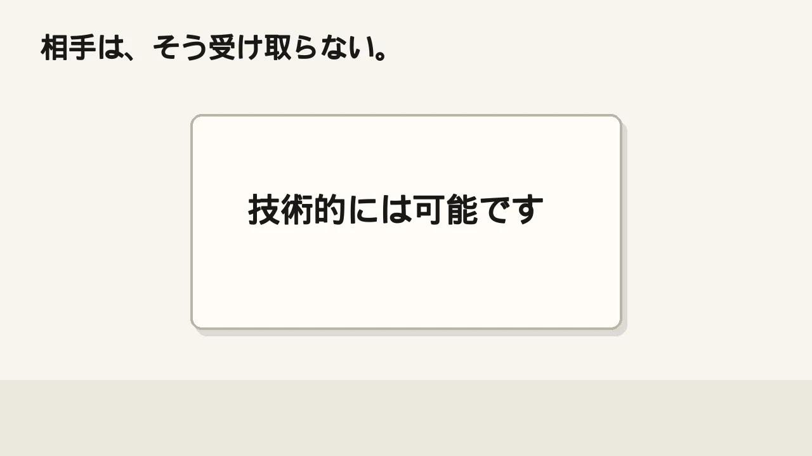

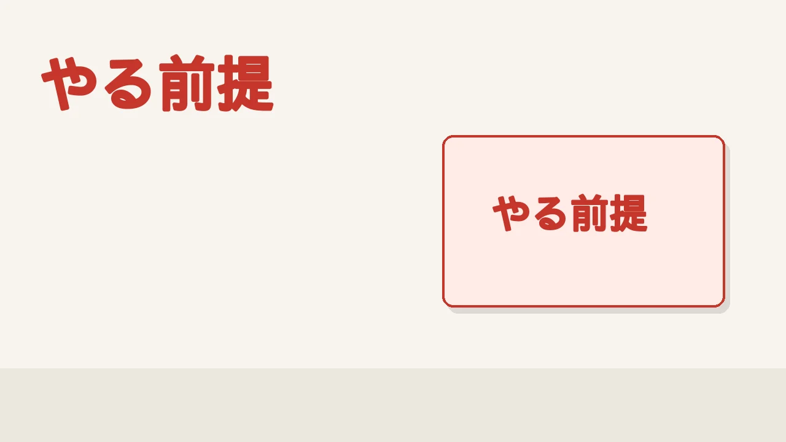
相手は、そう受け取らない。
技術的には可能です
やる前提
お金と時間は出すからやって、と返した瞬間、その案はやる前提に載ります。
はじめは札が画面の中央を占め、上に灰の「相手は、そう受け取らない。」。おわりは左に赤い特大の「やる前提」、右の相手側に裏返った札です。同じ語を札の面と大書きの両方に置きます。字数には一度だけ数えます。テーブルの面は下に残し、札が宙に浮いた説明図にはしません。
- 札がこちらの側から相手の側へ滑る。面は「技術的には可能です」のまま。
- 裏返る直前の2秒、図の層だけを札へ寄せる（ドリーイン）。文字は正面のまま読む。
- 声の「やる前提」で、0.4秒のホイップパン。札は相手側で裏返り、面が「やる前提」になる。この2秒と0.4秒の連続は、この見せ場の時間として守る。
- ホイップパンのあいだだけ、振った方向へ短くぼかす。白い加算は入れない。
- 着地のあとテーブルは止めず、04の紙の束へ流す。
ドリーイン2秒の直後に、ホイップパン0.4秒。掛けるのは札とテーブルの層です。文字の層はぼかしません。
図形と文字。裏返しは札の回転です。場面全体を箱にして回す切り替えにはしません。
選ぶ権利を、渡す。
0:40.8–0:58.8 / 18.0秒 ・ 根拠と留保 ・ 声88字／画面60字

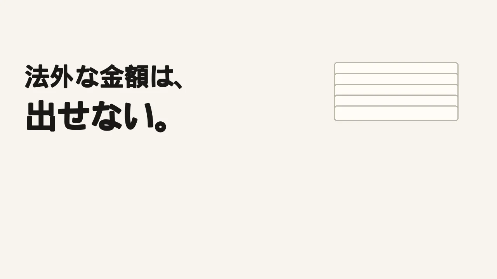

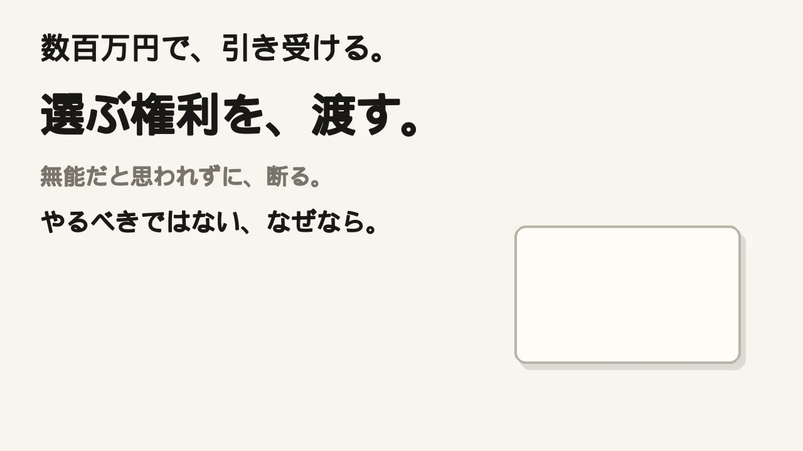
法外な金額は、出せない。
数百万円で、引き受ける。
無能だと思われずに、断る。
選ぶ権利を、渡す。
やるべきではない、なぜなら。
根拠のない法外な金額は出せません。数百万円なら、やるべきではないことをその金額で引き受けます。断る婉曲が選ぶ権利を渡してしまいます。今はやるべきではない、なぜなら、と言います。
はじめは左の二段と、右に積み上がった紙の束です。束は文字に重ねません。おわりは左に四段です。「選ぶ権利を、渡す。」がいちばん大きい。「無能だと思われずに、断る。」と「やるべきではない、なぜなら。」は灰で、その下に置きます。金額は原稿にある「法外な金額」と「数百万円」だけです。
- 声の「法外な金額は出せません」で、紙の束が高くなりすぎて崩れる。「出せない。」が着地する。
- 声の「数百万円」で、束が手元の厚さに収まり、「引き受ける。」が着地する。
- 「選ぶ権利を、渡す。」は、相手側へ滑る一枚の札になる。声の「渡してしまいます」に着地する。
- 「やるべきではない、なぜなら。」は灰の行で、声の「なぜなら」に着地する。読むあいだ、滑った札は止めない。
- その札を05の費用の札へ渡す。
崩れる束から、滑る札へパンする。文字は正面のまま。
図形と文字。1億円と内訳を求めるやりとりは、このカットには入れません。
費用がかかると、決まる。
0:58.8–1:15.7 / 16.9秒 ・ 根拠と留保 ・ 声82字／画面62字

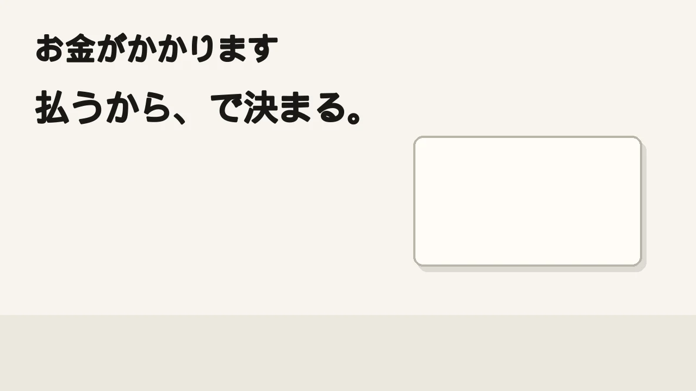

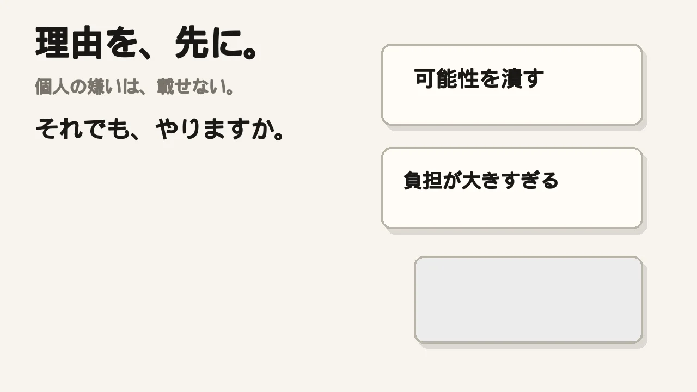
お金がかかります
払うから、で決まる。
理由を、先に。
可能性を潰す
負担が大きすぎる
個人の嫌いは、載せない。
それでも、やりますか。
「費用がかかります」も選択肢です。払うから、で決まります。やるべきではないなら、費用は出しません。個人的な嫌いは載せません。それでもやりますか、と選んでもらいます。
はじめは左の二段と、右に一枚の費用の札です。おわりは左に「理由を、先に。」が大きく、「それでも、やりますか。」がその下、右に理由の札が二枚、費用の札はその奥です。理由の面は「可能性を潰す」と「負担が大きすぎる」です。「個人の嫌いは、載せない。」は灰で、理由の札には入れません。
- 「お金がかかります」の札が相手の前まで滑り、声の「払うから」で止まる。
- 声のあと、画面の「理由を、先に。」が上から着地し、理由の二枚が費用の札より手前に出る。
- 「個人の嫌いは、載せない。」は灰のまま、理由の列に入らない。
- 「それでも、やりますか。」は理由のあとから着地する。選んでもらう行を、理由より前には出しません。
- 札の束が三本に分かれ、06の品質、納期、費用になる。
手前に出た理由の札へ、図の層を少し寄る。文字は正面のまま。
図形と文字。理由の語は原稿にある二つの例だけです。別の理由は足しません。
お金で、時間は買えない。
1:15.7–1:43.0 / 27.3秒 ・ 根拠と留保 ・ 声139字／画面68字

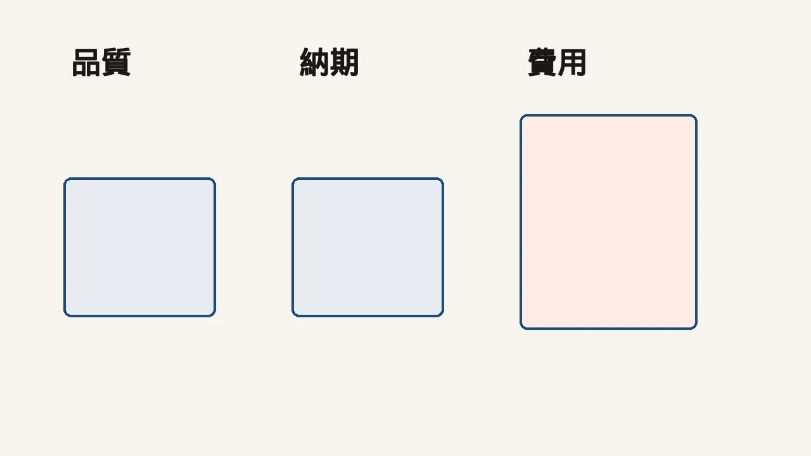

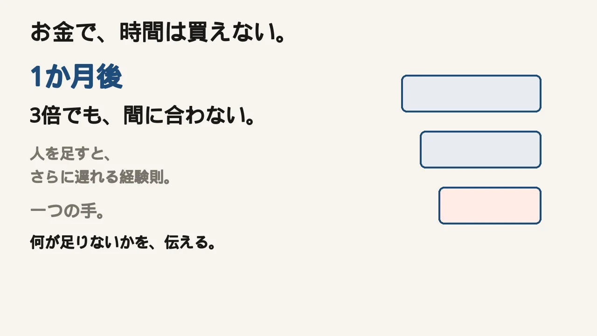
品質
納期
費用
お金で、時間は買えない。
1か月後
3倍でも、間に合わない。
人を足すと、さらに遅れる経験則。
一つの手。
何が足りないかを、伝える。
品質、納期、費用です。品質はほとんど通らず、納期にも抵抗が強いと、お金で何とかして、になります。1か月後なら、3倍でも間に合わないことがあります。人を足すとさらに遅れる、という経験則があります。お金で解決できる段階なら、それも一つの手です。できない段階なら、一緒に選び直します。
はじめは三本の柱が横に並び、見出しは柱の上です。費用の柱だけが前に出て、品質と納期は奥に残ります。おわりは左に文章、右に期間の印へ届かない柱です。「一つの手。」は灰で、「お金で、時間は買えない。」より小さい。人の形は描きません。柱の本数が増えることで、人を足すことを示します。
- 三本が立つ。品質と納期はほとんど動かず、費用だけが前に出る。声の「お金で何とかして」に合う。
- 声の「1か月後」「3倍」で、費用の柱が伸びても期間の印には届かない。「間に合わないことがあります」の留保は、印に触れる直前で止めて残す。
- 声の「経験則」で、柱の本数が増える。増えるほど印は遠ざかる。「さらに遅れる経験則。」が着地する。
- 「一つの手。」は灰で、声の「それも一つの手です」に着地する。解決できる段階を消して見せません。
- 声の「一緒に選び直します」で、三本が同じテーブルに戻り、動かせる一本が前に出る。戻った列を07の札にする。
届かない印へ寄ってから、戻りで引く。寄っても印には触れません。
図形と文字。経験則の人名と書名は出しません。新しい人が戦力になるまでの説明と、窓口の権限の話は、このカットには入れません。
引き受けられるカードだけ。
1:43.0–1:58.4 / 15.4秒 ・ 根拠と留保 ・ 声74字／画面48字

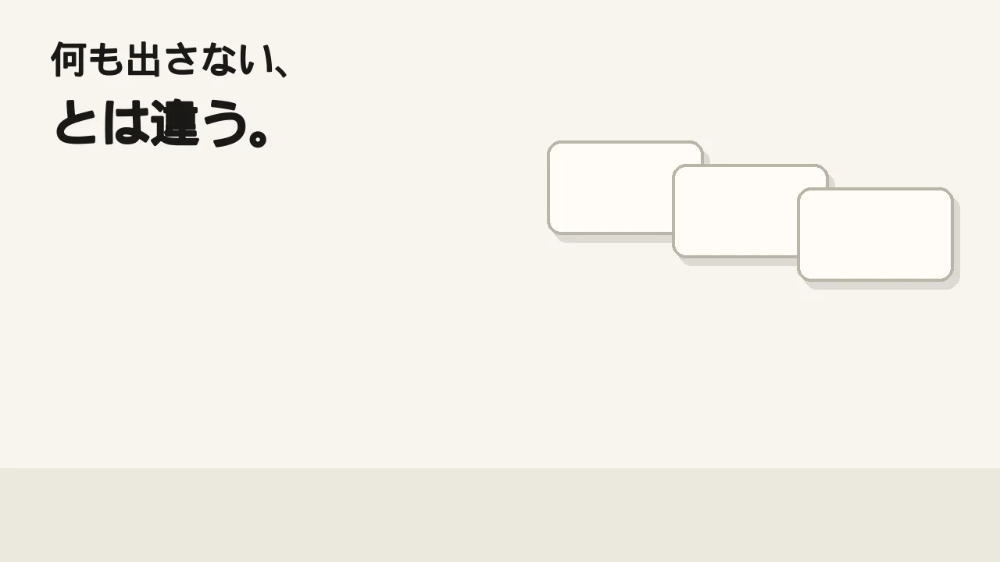

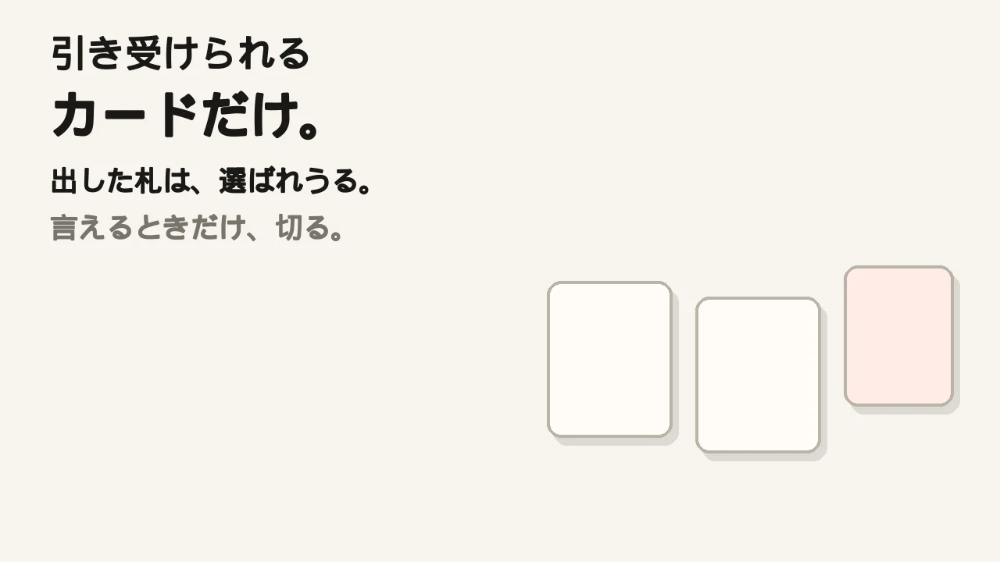
何も出さない、とは違う。
引き受けられるカードだけ。
出した札は、選ばれうる。
言えるときだけ、切る。
無理です、だけでは交渉が止まります。引き受けられるカードだけを並べます。出したカードは必ず選ばれうる、ということです。本当に言えるときだけ切ります。
はじめは左の二段と、右に枚数の多い札です。おわりは左に三段、下に残った三枚です。相手側へ半分出た一枚は選ばれうることを示し、必ず選ばれる印にはしません。「言えるときだけ、切る。」は灰です。
- 札が一度多く並ぶ。声の「無理です、だけでは」で、引き受けられない札がテーブルの外へ滑る。「何も出さない、とは違う。」は残す。無くすことと、出さないことを同じ絵にしません。
- 「引き受けられるカードだけ。」は、残った札が手元に揃うのと同時に着地する。
- 声の「必ず選ばれうる」で、残った一枚が相手側へ半分滑る。戻れる余白を残す。
- 声の「本当に言えるときだけ」で、その札は滑りの途中にいる。切るのは、戻さないと決めたときだけです。
- 手元の札を08でテーブルの下へ引く。
半分出た札へパンし、手元の残りへ戻す。文字は正面のまま。
図形と文字。費用の追加、期間を2か月ずらす、精度を下げる、という個別の条件は入れません。
できないと、納得してもらう。
1:58.4–2:19.4 / 21.0秒 ・ 本人の結論 ・ 声88字／画面53字

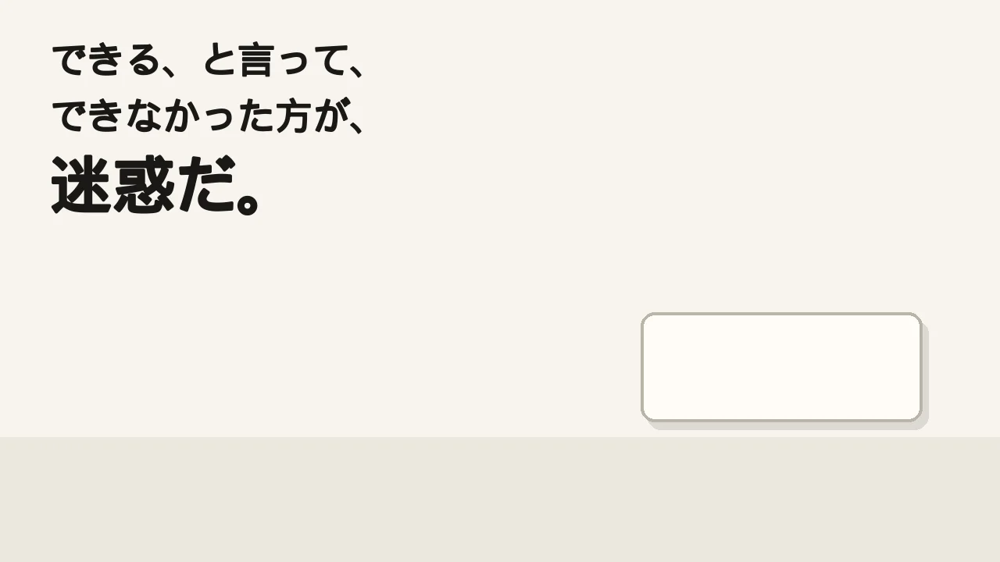

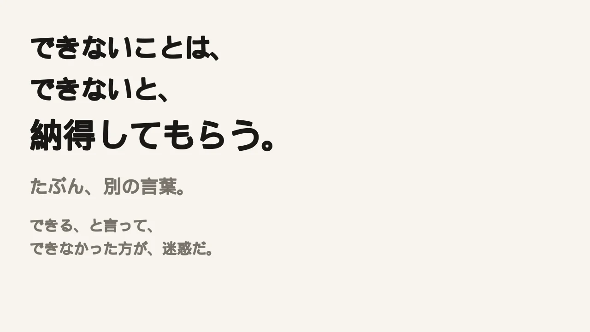
できる、と言って、できなかった方が、迷惑だ。
できないことは、できないと、納得してもらう。
たぶん、別の言葉。
できると言ってできなかった方が、よほど多くの人に迷惑がかかります。できないと伝え、納得してもらいます。一度飲み込んでみてください。本当に伝えたいのは、たぶん別の言葉のはずです。
はじめは左の三段と、下へ沈む札です。おわりは左に縦の三段です。「納得してもらう。」がいちばん大きい。「たぶん、別の言葉。」は灰で、その下に置きます。断定の行より小さくして、原稿の「たぶん」「はず」を残します。01の横の二段とは組みを変えます。
- 声の「できなかった方が」で、「技術的には可能です」の札がテーブルの下へ引かれる。
- 「できないことは、できないと、納得してもらう。」が上から三段で着地する。声の「納得してもらいます」に、いちばん大きい行を合わせる。
- 「たぶん、別の言葉。」は灰で、声の「たぶん別の言葉のはずです」に着地する。大きい行へ書き換えません。
- 結びの約3秒も行の塊をゆっくり寄せる。字形は崩さない。
- 最後に図の層を右へホイップパンし、ライムの全面へ渡す。ロゴの動きは、この振りが終わってから始める。
結びのあいだは文字の塊へ寄せてから、図の層だけをホイップパンする。ロゴの区間は固定です。
図形と文字。視聴者への問いには閉じません。
エンドロゴ
2:19.4–2:24.9 / 5.5秒 ・ 制作表示 ・ 声0字／画面0字

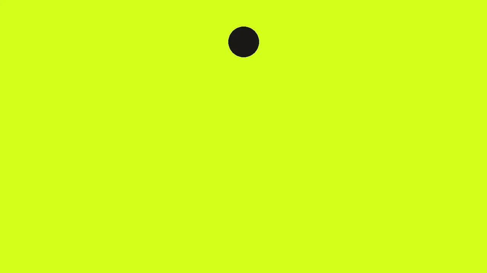

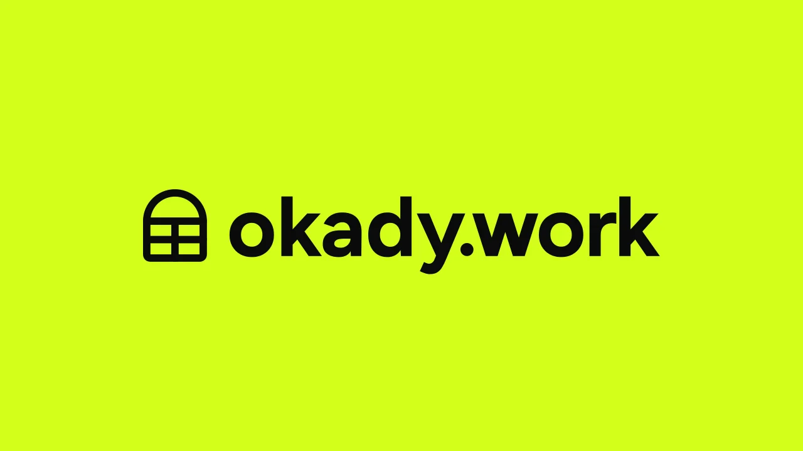
なし（ロゴのみ）
なし
背景は #d2ff1a。ロゴは中央。形、書体、色、比率は変えない。本編の要素は重ねません。
- 0–2.6秒：原本 SVG の o の落下、バウンド、定位置への移動。
- 2.6–3.2秒：全体が左へスライド。3.0–4.0秒：「.work」が一文字ずつ出現。
- 4.0–5.5秒：完成状態を1.5秒保持して終える。
ロゴの区間は固定。本編からの振りは、この動きが始まる前に終えます。
リポジトリ直下の okady-work-logo.svg。フレーム時刻から再現します。

詳細（ここから下は補足）
声・文字・素材の分担
| 担当 | 受け持つこと | 扱い |
|---|---|---|
| 声 | 交渉は負けていること、たいていの本当の意味、欲しいものに変わること、おとり効果、選ばれうるならなおさら、予算と期間で出せないこと、やる前提に載ること、法外な金額と数百万円、婉曲、なぜなら、費用も選択肢、個人の嫌い、品質・納期・費用、1か月と3倍、経験則、一つの手、引き受けられるカード、必ず選ばれうること、迷惑、納得、たぶん別の言葉 | 画面の短い語と意味を合わせる。画面の全文の朗読にはしない。カット単位のまとまった文で渡す。 |
| 文字 | カードを渡す、やめた方がいい、ある程度、選ばれない札でも動く、やる前提、選ぶ権利、理由を先に、お金で時間は買えない、引き受けられるカードだけ、納得してもらう、たぶん別の言葉 | 説明の全文は載せない。01は横の二段、08は縦の三段で組を変える。 |
| 図形 | 札、棚、矢印、紙の束、三本の柱、期間の印 | 一つの形に複数の意味を持たせない。対応は記号と色。 |
| 動画 | なし | 写真も、生成映像も、この企画の本線には使わない |
ナレーションありの構成です。音声の制作は制作側の担当で、音源がまだ無いことは引き渡しを止める理由にしません。読みは「婉曲＝えんきょく」「おとり＝おとり」「数百万円＝すうひゃくまんえん」「1か月＝いっかげつ」「3倍＝さんばい」「品質＝ひんしつ」「納期＝のうき」「費用＝ひよう」です。
主張・根拠・留保の対応
| 役割 | 内容 | カット |
|---|---|---|
| 主張 | 「技術的には可能です」と言った瞬間、交渉は負けている。たいていの本当の意味は、やめた方がいい。 | 01 |
| 根拠 | 手が届かないものを並べると、欲しいものに変わる。選ばれない選択肢でさえ判断を動かす。これを原稿はおとり効果と呼ぶ。 | 02 |
| 留保 | 範囲はある程度決まる。だまそうという話ではない。今の予算と期間で実現できないものは出さない。揉める種はかなり減る。 | 02 |
| 根拠 | 相手はそう受け取らない。お金と時間を出すからやって、と返ると、やる前提に載る。 | 03 |
| 留保 | 根拠のない法外な金額は出せない。数百万円なら、やるべきではないことをその金額で引き受ける。 | 04 |
| 主張 | 断るための婉曲が選ぶ権利を渡す。今はやるべきではない、なぜなら、と自分の意見として言う。 | 04 |
| 根拠 | 費用がかかります、も選択肢になる。払うから、で話は決まる。やるべきではないなら費用の話は出さない。 | 05 |
| 留保 | 理由は先に示す。載せる理由は可能性を潰すことと、負担が大きすぎること。個人的な嫌いは載せない。そのうえで、それでもやりますか、と選んでもらう。 | 05 |
| 根拠 | 材料は品質、納期、費用。品質はほとんど通らず、納期にも抵抗が強いと、お金で何とかして、になる。1か月後は3倍でも間に合わないことがある。人を足すとさらに遅れる、という経験則がある。 | 06 |
| 留保 | お金で解決できる段階なら、それも一つの手。できない段階なら、何が足りないかを伝えて、動かせるものを一緒に選び直す。 | 06 |
| 主張 | 無理です、だけでは交渉が止まる。何も出さないこととは違う。断るなら、引き受けられるカードだけを並べる。 | 07 |
| 留保 | 出したカードは必ず選ばれうる。本当に言えるときだけ切る。 | 07 |
| 結論 | できると言ってできなかった方が、よほど多くの人に迷惑がかかる。できないと伝え、納得してもらう。本当に伝えたいのは、たぶん別の言葉のはずだ。 | 08 |
原稿の文との対応、画面の文言と要約の区別、この動画に載せなかった論点は references.md。
企画側／制作側
| 企画側で用意するもの | 制作側で仕上げるもの |
|---|---|
| 現行の文言、声の原稿、配分、絵コンテ18枚、原稿との対応、演出の採否 | three.js と文字層の実装、細かな動きと同期、ナレーション、代表区間の試作と全編の書き出し |
| 静止コマの文字配置の点検 | 動いている全カットの安全域と重なりの検査、実速再生 |
企画と絵コンテはこの一式です。ナレーションと本編は制作側が担当します。BGMと効果音は、この企画では作りません。これ以外の画像や動画が必要になったら、必要な内容を企画側へ返します。制作側は動画AIで新規の素材を作りません。
requestAnimationFrame のループを本編の動きにしません。ナレーションの候補は Gemini 3.8 Flash TTS、または Eleven v4。名称はユーザー指定の候補で、実行時に識別子を確認します。キーは環境変数から読み、値は書きません。デザインシステム（映像の文字・色・グリッド）
紙色 #F7F4EE、墨 #1A1916、灰 #7A746C、棚と矢印と印の青 #1F4B7A、裏返った札の赤 #C5362B。ライム #d2ff1a はロゴだけに使います。文字は Noto Sans JP、見出し700–900、補足400–500。制作側が OFL に沿って用意します。このフォルダには同梱しません。企画書の配色とは別です。
| 段 | 1920×1080の参考値 | 用途 |
|---|---|---|
| 大きな語 | 140–200px | 01の「カードを渡す。」、03の「やる前提」、04の「選ぶ権利を、渡す。」、06の「時間は買えない。」、08の「納得してもらう。」 |
| 主文 | 80–120px | 02の「欲しくなる。」、05の「理由を、先に。」、07の「カードだけ。」 |
| 短い語 | 40–64px | 灰の留保、棚の上の短い行、札の面の語 |
外側余白は96pxを目安にします。文字の安全域は左右64px、上下48px。1280×720の絵コンテでは左右48px、上下36pxです。01は左の二段と右の札、02は左の文字と右の棚、03は中央の札から左右に分かれた「やる前提」、04は束から左の四段、05は一枚から手前の二枚、06は三本の柱から左の文章、07は多い札から手元の三枚、08は沈む札から縦の三段です。
動きの言語
| 動作 | 意味と使う場所 | 読む間・次へのつながり |
|---|---|---|
| 言葉が札になって滑る | 01。その一言が相手へ渡る選択になる。 | テーブルを流し、札を02の棚の動きへ渡す。 |
| 棚と、曲がる矢印 | 02。並べた先が欲しいものになる。選ばれない札でも矢印は動く。 | 手前の棚ほど速く流し、空いた上段を03の入口にする。 |
| 寄ってから、裏返る | 03。2秒のドリーインの直後、0.4秒のホイップパン。面が「やる前提」になる。 | 着地のあともテーブルを流し、04の束へ渡す。 |
| 高すぎる束が手元の厚さに戻る | 04。法外な金額は出せない。数百万円なら引き受ける。 | 選ぶ権利の札を滑らせ、05の費用の札にする。 |
| 理由が費用より手前に出る | 05。理由を先に示す。個人の嫌いは理由の札に入らない。 | 束が三本に分かれ、06の柱になる。 |
| 柱が伸びても、印に届かない | 06。1か月後は3倍でも間に合わないことがある。人を足すとさらに遠ざかる。 | 印には触れず、三本を07の札へ戻す。 |
| 多い札が落ち、一枚が半分出る | 07。引き受けられる札だけが残る。出した札は選ばれうる。 | 半分出た札を滑りの途中に置き、08で下へ引く。 |
| 札が沈み、結びが着地する | 08。できると言ってできなかった方が迷惑だ。たぶん、は灰のまま。 | 結びの約3秒も塊を寄せ、ホイップパンでロゴへ渡す。 |
1字ずつの常時の揺れ、拍ごとの脈動、文字の崩壊は使いません。文字を読ませるために画面全体を静止させず、文量、動かす層、構図で調整します。イージングの値は制作側の裁量です。03の2秒と0.4秒、ロゴの秒、決め語を声のどの語に合わせるかは、各カットに書いてあります。
記号と色
| 記号 | 意味 |
|---|---|
| 墨の大きな語 | 本人の決め語。01の「カードを渡す。」、03の「やる前提」、04の「選ぶ権利を、渡す。」、08の「納得してもらう。」 |
| 灰の語 | 留保。02の「ある程度」「だまそう、ではない。」「かなり減る。」、05の「個人の嫌いは、載せない。」、06の「一つの手。」、07の「言えるときだけ、切る。」、08の「たぶん、別の言葉。」 |
| 青の棚と矢印 | 何を並べるか。矢印の先が相手の欲しいものになる。02だけ |
| 札 | 相手に渡る選択。面の語がその選択の中身 |
| 赤い札と赤い「やる前提」 | 相手が、やる前提として受け取った状態。03だけ。勝ち負けの印にはしない |
| 紙の束 | 積み上げた金額。高すぎる束は法外な金額、手元の厚さは数百万円。04 |
| 三本の柱 | 品質、納期、費用。費用だけが前に出ても、期間の印には届かない。06 |
| 半分出た札 | 出した札は選ばれうる。必ず選ばれる状態にはしない。07 |
キャラ設定
人物、顔、手は描きません。柱の本数は人の姿ではありません。吹き出しは出しません。会社名、メーカー名、車種、誌名、書名、人名、SNSの画面は出しません。
差し替え候補
暗いショールームの車列はAI生成・未承認・未生成です。今回は生成しません。本線は制作側が描く棚と矢印です。手が届かないものを上の棚に置くと、矢印がそこへ曲がります。実現できないものはその棚から退きます。
棚と矢印は02のあいだ、同じ描き方で続きます。一部の箱だけを別の生成映像や実写にはしません。車列を後から使う場合は、棚が出る区間の質感を揃え、クレジット消費の承認が要ります。この企画ではその承認をしていません。車の銘柄は生成する場合も書きません。
素材
| ファイル | 役割 | 使用区間 |
|---|---|---|
assets/storyboard/cut-XX-start.webp と cut-XX-end.webp | 絵コンテ18枚。1280×720。09はライム。ほかは明るい紙色の図形と文字 | 本編に貼る完成素材ではない |
| okady-work-logo.svg | エンドロゴ | 09の全区間。リポジトリ直下の原本。一式を移すときもこの相対位置を保つ |
新たに取得する写真、動画、フォントファイルはありません。Noto Sans JP は制作側が用意します。このフォルダには同梱しません。
音
BGMと効果音は、この企画では作らない。検討もしない。
根拠
原稿との対応は references.md。演出候補の確認と採否は effects-direction.md。採否の履歴を本編の作業手順には混ぜません。
完成条件・確認状態
- 01と08で、その一言はカードを渡していることと、できないことはできないと納得してもらうという本人の結論まで閉じる。08の「たぶん」は灰の小さい行のまま残す。
- 02は棚と矢印で並べたものが欲しいものに変わることを見せる。おとり効果、選ばれうるならなおさら、だまそうではない、今の予算と期間で出せない、かなり減る、を声か画面に残す。車の銘柄は出さない。
- 03は、札が相手側で「やる前提」に裏返る。直前のドリーインは2秒、続くホイップパンは0.4秒。白い加算は入れない。
- 04は、根拠のない法外な金額は出せないこと、数百万円ならやるべきではないことをその金額で引き受けること、婉曲が選ぶ権利を渡すこと、今はなぜならと言うことを残す。
- 05は費用の話も選択肢になること、理由を先に出すこと、個人の嫌いは載せないこと、それでもやりますかと選んでもらうことを残す。理由の面は可能性を潰すことと、負担が大きすぎることだけにする。
- 06は品質・納期・費用、1か月後は3倍でも間に合わないことがあること、人を足すとさらに遅れる経験則、解決できる段階なら一つの手、できない段階は一緒に選び直すことを残す。期間の印には触れない。人の形は描かない。
- 07は、無理ですだけでは交渉が止まること、何も出さないこととは違うこと、引き受けられるカードだけ、必ず選ばれうること、本当に言えるときだけ切ることを残す。半分出た札を、必ず選ばれた状態にしない。
- 札は顔にしない。人物、企業名、メーカー名、車種、SNSの画面は出さない。
- 章表示、テロップ帯、エンドクレジット、白フラッシュは入れない。エンドロゴはライムの単独画面で、原本の動き、中央、1.5秒の保持を再生して確認する。
- 絵コンテ18枚（1280×720）を、左右48px・上下36pxの安全域、文字同士、文字と図形（札、棚、矢印、箱、束、柱）の交差で検査した。はみ出し0、文字同士の重なり0、文字と図形の交差0。札の面に置いた語はその札との交差を意図した重なりとして検査から外した（01おわり、03はじめ、03おわり、05おわりの二枚）。相対輝度（0.2126R＋0.7152G＋0.0722B）の平均は18枚で235.0、最小は09おわりの220.6（背景 #d2ff1a）、最大は07はじめの239.2。紙色のコマは02はじめの229.4が最小。ロゴの字形と、09はじめの円はこの検査の文字対象外。終了ロゴの画像は左140px・上200px・右1140px・下520pxで、安全域の内側。この検査は静止コマの配置で、本編の合格ではない。
- 本編は未制作。実速再生は未確認。制作側は全カットを0.25秒ごとに取り、左右64px・上下48pxの安全域、文字同士、文字と図の交差を検査する。声の語の時刻と画面の変化を並べ、3秒以上変化のない区間を名指しする。最初の試作は02と03。そのあと06、08–09、最後に全編を確認する。